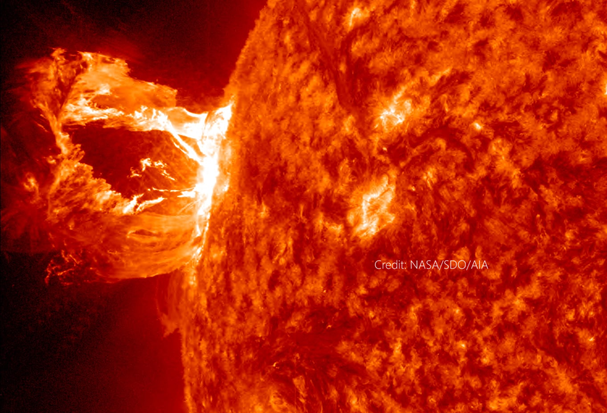
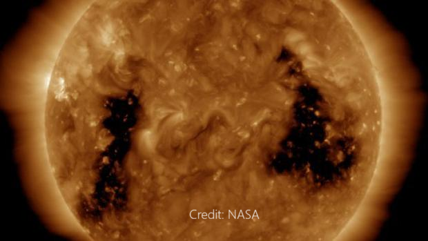

Research & Projects
Transient Space Weather Impacts on the MIT System
My research program characterizes and predicts the impact of transient solar activity on the near-Earth space environment, with emphasis on how these impacts propagate through the ionosphere to affect HF radio communications, satellite navigation, power grids, and submarine cables. I work at the intersection of observational data analysis, physics-based numerical modeling, and machine learning, using the SuperDARN HF radar network as a primary observational tool alongside coupled whole-atmosphere models and ground-based instrumentation.

Solar Flare Effects on HF Radio & Ionosphere
Characterization of shortwave fadeout, the Doppler Flash, and ionospheric sluggishness using SuperDARN HF radars and WACCM-X simulations.
View Project →
GMD & Submarine Cable Vulnerability (SCUBAS)
Modeling geomagnetically induced currents in submarine fiber-optic cables using the open-source SCUBAS thin-sheet electromagnetic model.
View Project →Solar Eclipse Ionospheric Physics
NSF-funded (2024–2027) investigation of ionospheric density response to American solar eclipses using SuperDARN, HamSCI, and WACCM-X.
View Project →
Coronal Hole Detection (CHIPS)
Probabilistic identification of coronal holes and boundaries in solar EUV images using the pyCHIPS open-source algorithm.
View Project →
AGW-Driven Impacts on HF Communication
Investigating how atmospheric gravity waves from severe weather propagate into the ionosphere and affect HF radio propagation.
View Project →
Probabilistic Geomagnetic Storm Prediction
Two-layer neural network for Kp index forecasting with 3-hour lead time and probabilistic uncertainty bounds.
View Project →
SWF Anomaly Detection in SuperDARN
Probabilistic shortwave fadeout detection in SuperDARN time series using Z-score and nonlinear energy operator methods.
View Project →
SWF Real-Time Monitoring Tool
Operational monitoring tool generating summary reports of flare-driven SWF events across the North American SuperDARN network.
View Project →
Submarine Cable Monitoring (Google GARA)
Google Unrestricted Award (GARA) project developing tools for monitoring geomagnetically induced voltages in global submarine cables using SCUBAS.
View Project →